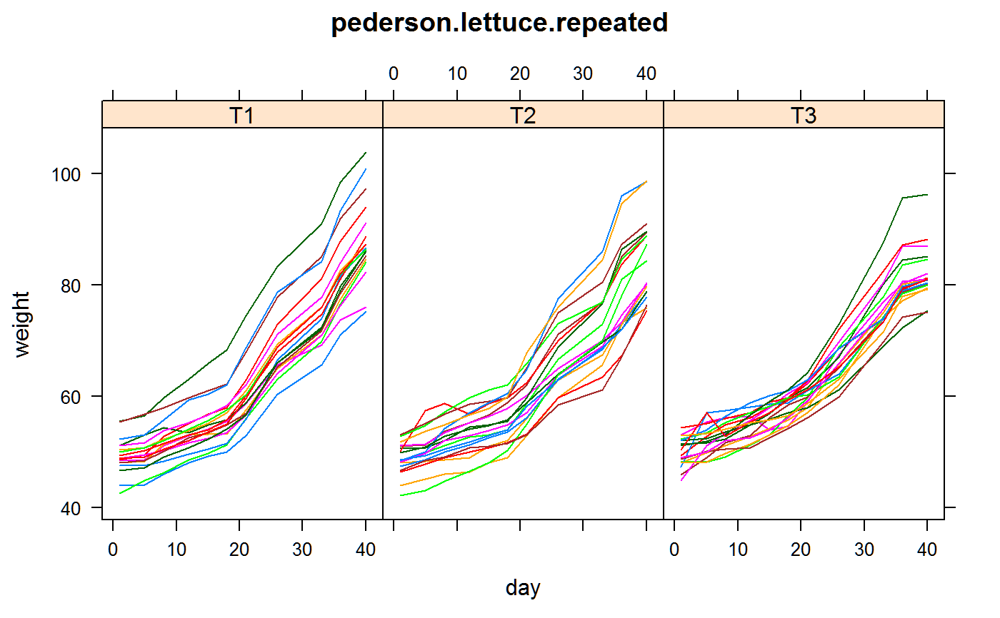

pederson.lettuce.repeated.RdRepeated measurements of lettuce growth for 3 treatments.
data("pederson.lettuce.repeated")
A data frame with 594 observations on the following 4 variables.
plantplant number
dayday of observation
trttreatment
weightweight
Experiment conducted in a greenhouse in Silver Bay, Minnesota. Plants were grown hydroponically. Treatment 1 had 9 plants per raft. Treatment 2 had 18 plants, treatment 3 had 36 plants. The response variable is weight of plant, roots, soil, cup, and water. The plants were measured repeatedly beginning Dec 1, and ending Jan 9, when the plants were harvested.
Levi Dawson Pederson (2015). Mixed Model Analysis for Repeated Measures of Lettuce Growth Thesis at University of Minnesota. Appendix C. https://scse.d.umn.edu/sites/scse.d.umn.edu/files/pedersonprojectthesis.pdf
None
library(agridat) data(pederson.lettuce.repeated) dat <- pederson.lettuce.repeated libs(lattice) dat <- dat[order(dat$day),] xyplot(weight ~ day|trt, dat, type='l', group=plant, layout=c(3,1), main="pederson.lettuce.repeated")# \dontrun{ # Pederson used this SAS MIXED model for unstructured covariance # proc mixed data=Project.Spacingdata; # class trt plant day; # model weight=trt day trt*day; # repeated day / subject=plant type=un r rcorr; # This should give the same results as SAS, but does not. libs(nlme) dat <- transform(dat, plant=factor(plant), day=factor(day)) datg <- groupedData(weight ~ day|plant, data=dat) un1 <- gls(weight ~ trt * day, data=datg, correlation=corSymm(value=rep(.6,55), form = ~ 1 | plant), control=lmeControl(opt="optim", msVerbose=TRUE, maxIter=500, msMaxIter=500))#> initial value 2429.796794 #> iter 10 value 2043.265582 #> iter 20 value 2026.878345 #> iter 30 value 1991.844910 #> iter 40 value 1974.144855 #> iter 50 value 1962.086595 #> iter 60 value 1957.390081 #> final value 1957.093673 #> converged#> 'log Lik.' -1955.263 (df=89)# Comparing the SAS results in Pederson (page 16) and the nlme results, we notice # the SAS correlations in table 5.2 are unusually low for the first # column. The nlme results have a higher correlation in the first column # and just "look" better un1#> Generalized least squares fit by REML #> Model: weight ~ trt * day #> Data: datg #> Log-restricted-likelihood: -977.6315 #> #> Coefficients: #> (Intercept) trtT2 trtT3 day5 day8 day12 #> 49.26666667 -0.46111111 0.69444444 0.73888889 2.57222222 4.42777778 #> day15 day18 day21 day26 day33 day36 #> 5.66666667 7.05555556 11.14444444 19.70555556 26.26111111 32.78888889 #> day40 trtT2:day5 trtT3:day5 trtT2:day8 trtT3:day8 trtT2:day12 #> 38.73333333 0.75555556 1.56111111 0.56111111 0.76111111 0.06111111 #> trtT3:day12 trtT2:day15 trtT3:day15 trtT2:day18 trtT3:day18 trtT2:day21 #> 0.51666667 -0.05555556 0.69444444 -0.27777778 0.96666667 -0.66666667 #> trtT3:day21 trtT2:day26 trtT3:day26 trtT2:day33 trtT3:day33 trtT2:day36 #> -0.86666667 -1.72222222 -3.48333333 -2.55000000 -0.43888889 -2.55000000 #> trtT3:day36 trtT2:day40 trtT3:day40 #> -1.89444444 -3.07222222 -6.53888889 #> #> Correlation Structure: General #> Formula: ~1 | plant #> Parameter estimate(s): #> Correlation: #> 1 2 3 4 5 6 7 8 9 10 #> 2 0.945 #> 3 0.942 0.980 #> 4 0.938 0.962 0.986 #> 5 0.919 0.944 0.973 0.990 #> 6 0.901 0.922 0.951 0.974 0.994 #> 7 0.883 0.900 0.929 0.956 0.971 0.979 #> 8 0.803 0.803 0.845 0.879 0.895 0.909 0.955 #> 9 0.706 0.701 0.741 0.777 0.799 0.821 0.882 0.954 #> 10 0.504 0.515 0.555 0.602 0.629 0.656 0.743 0.866 0.944 #> 11 0.537 0.551 0.587 0.633 0.657 0.683 0.763 0.864 0.929 0.963 #> Degrees of freedom: 594 total; 561 residual #> Residual standard error: 5.564987# }